基于STM32单片机对婴儿睡姿识别的人工智能监护器
一款能够随时建立图像数据库，实现智能自动化对婴儿睡姿实时识别并及时报警的监护器。
作品简述
基于C、Python编程语言，以STM32单片机和OpenMV为硬件基础，结合物联网技术和MQTT协议，利用阿里云云端平台开发该人工智能监护器，实现智能自动化对婴儿睡姿实时识别并利用云智能APP报警的功能，获得华南农业大学2020年“丁颖杯”创意发明大赛二等奖。
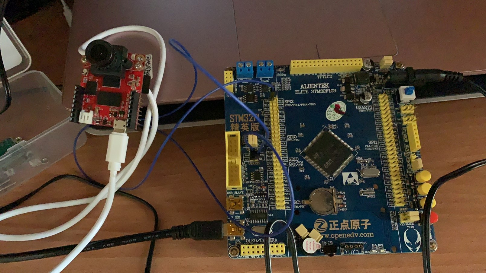
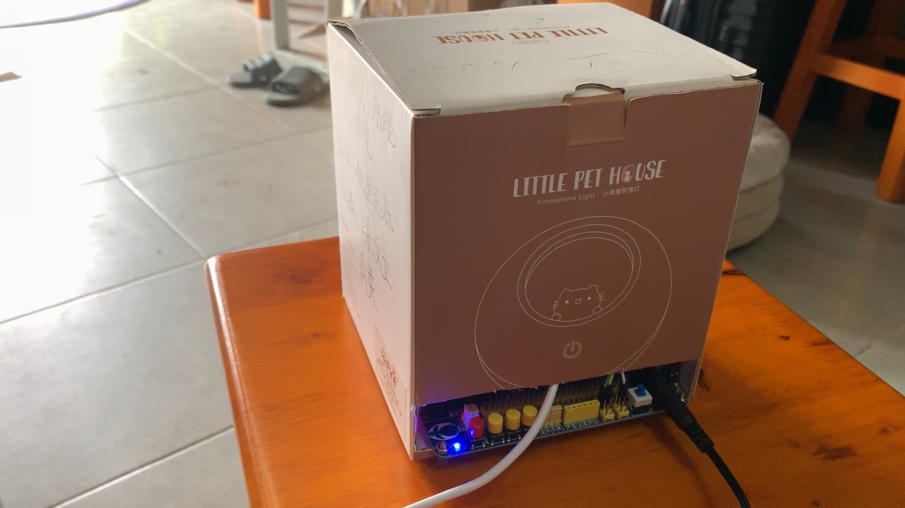
设计概念
根据《美国儿科学会》的数据显示，大约有1/2000的婴儿在2-4个月的时候，在睡眠过程中由于睡姿不当或有衣物挡住口鼻呼吸而发生窒息死亡的意外。针对婴儿在睡眠中出现窒息死亡的现象，该作品设计具有智能识别婴儿睡姿、场景内报警、远程报警的功能，从而做到减轻父母的劳动强度。
组成介绍
整个作品设计思路如图所示，一共有四个部分组成，两两之间进行数据交互，通过这样的形式，形成一个完全闭合的数据交互通信系统。
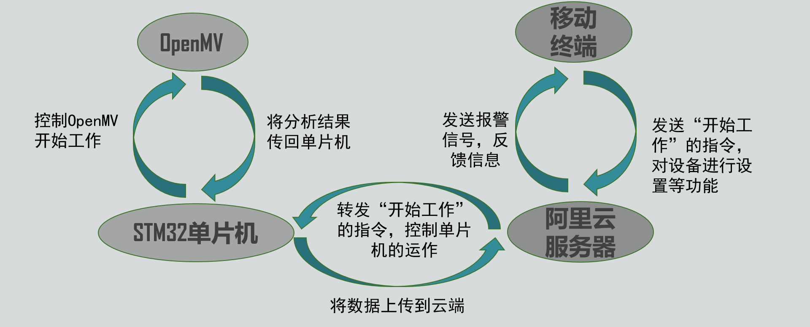
云平台情况
作品通电之后，STM32单片机自动运行接入设计好的WiFi程序并接入到阿里云服务器。产品在工作时，也能通过云平台检测到实时的动作行为。
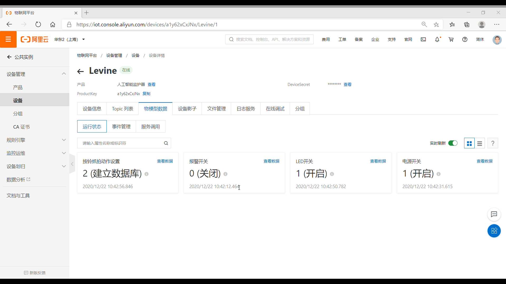
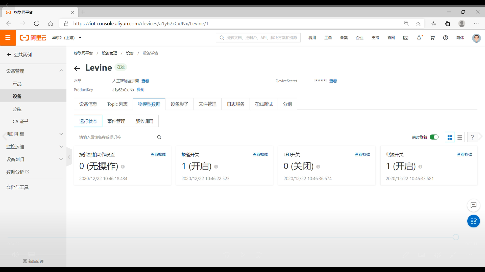
动作行为
通过手机可操作产品建立数据库以及识别动作，以下是软件截图。
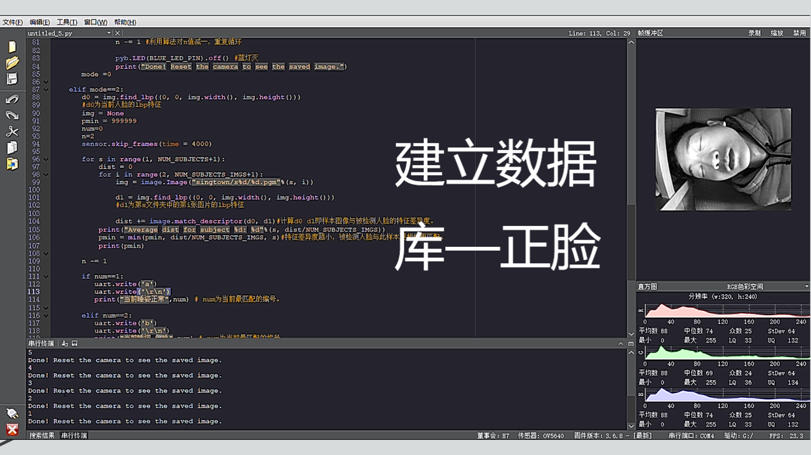
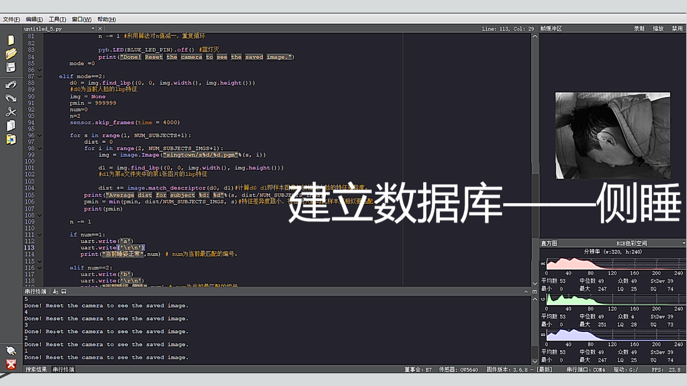
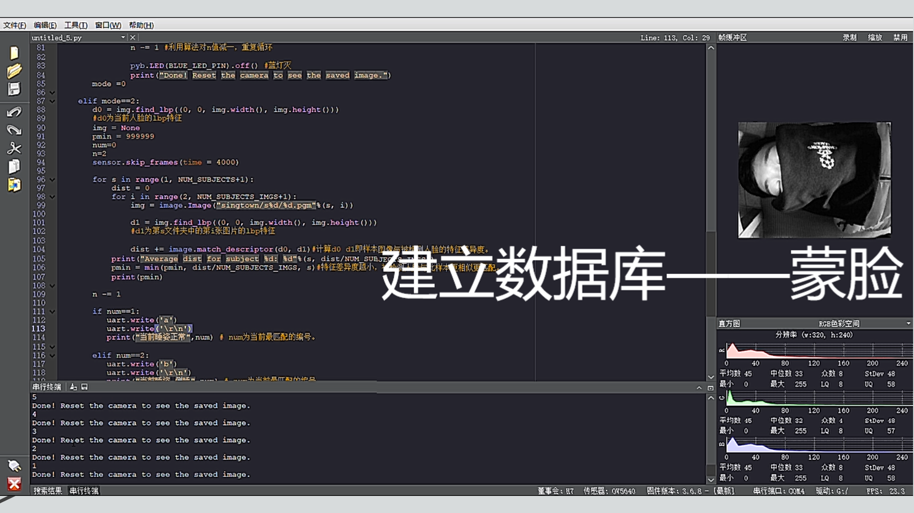
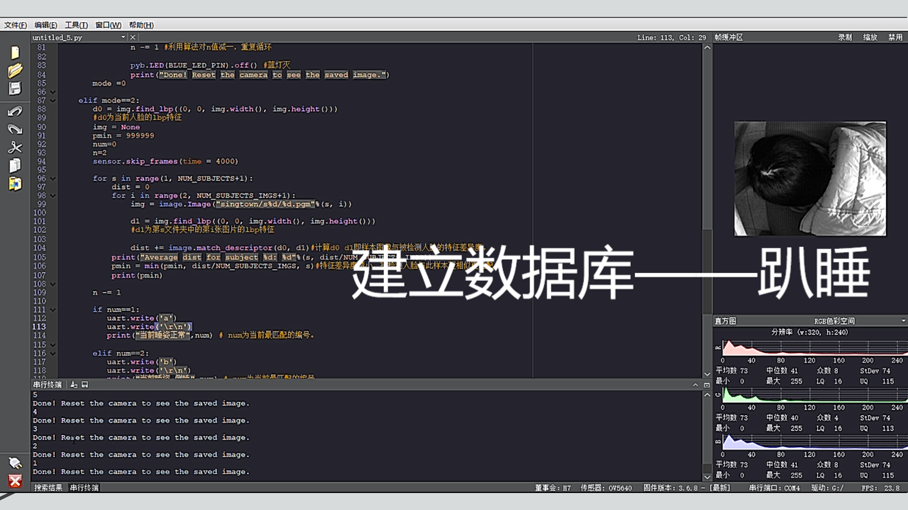
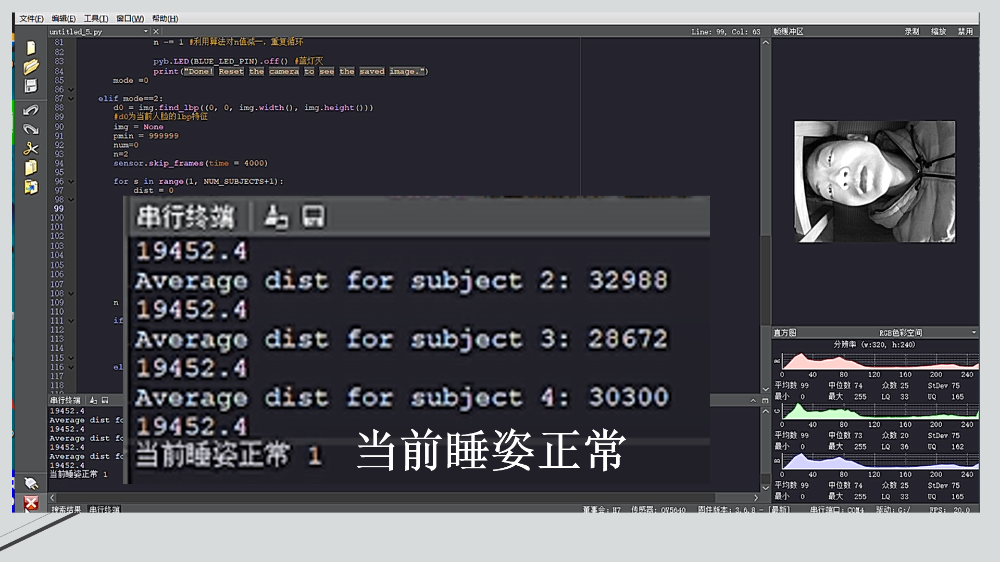
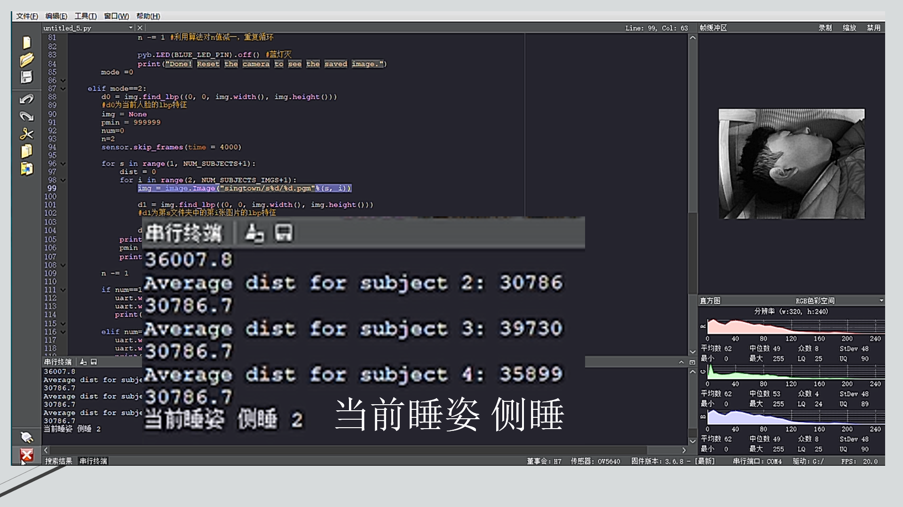
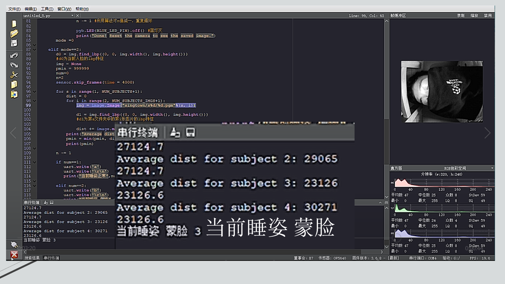
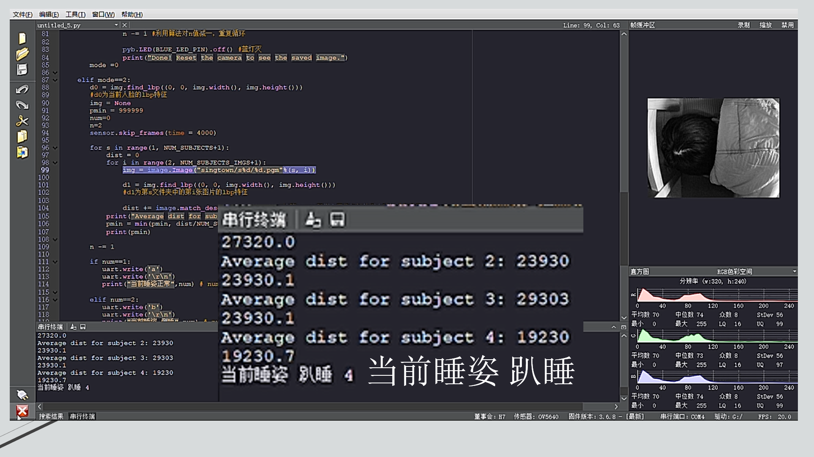
实物展示
接下来是实物展示部分，视频经剪辑后约一分半钟时长。